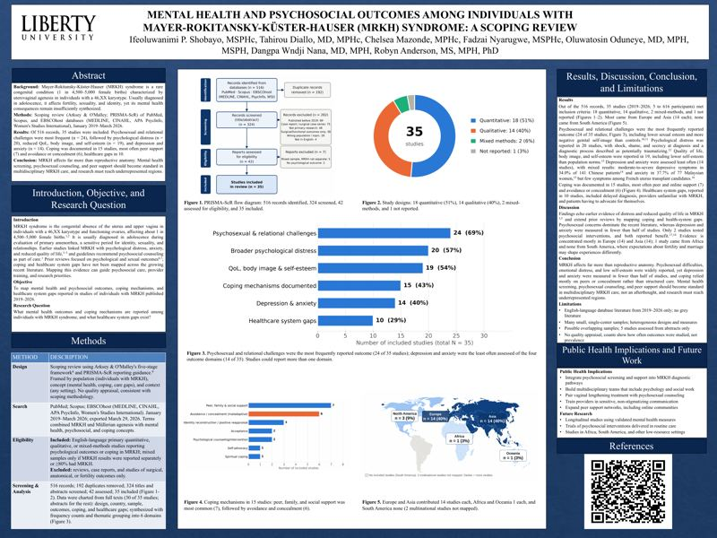
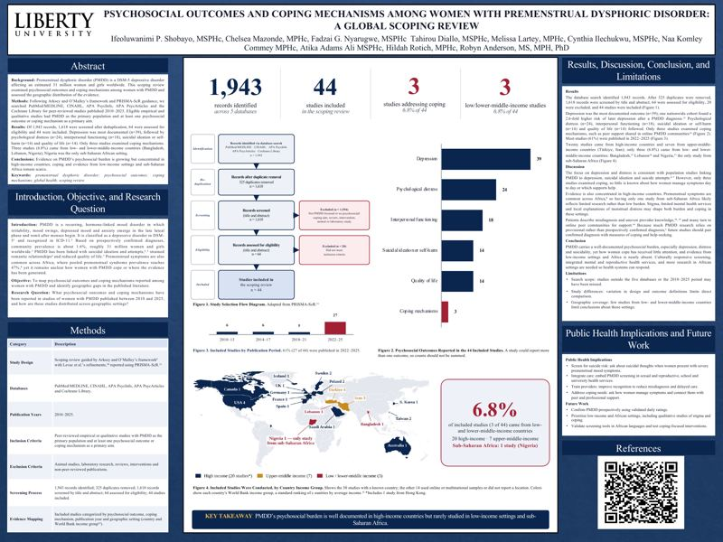
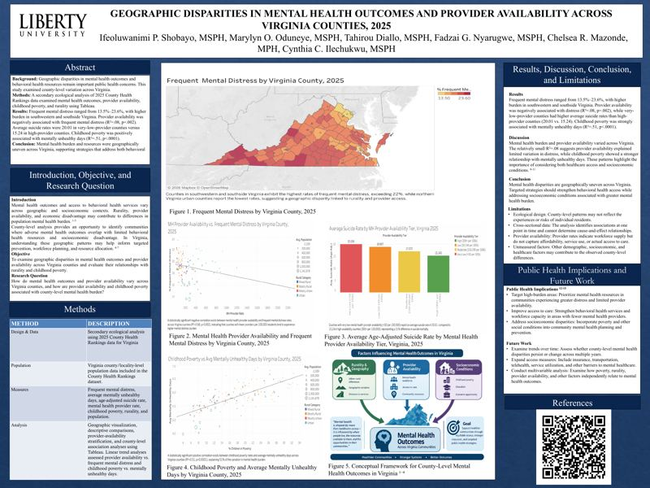
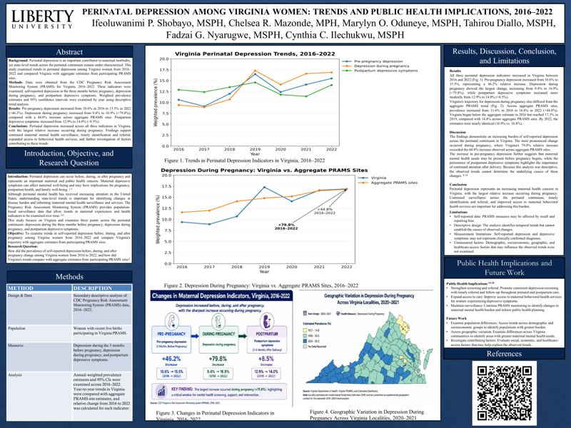
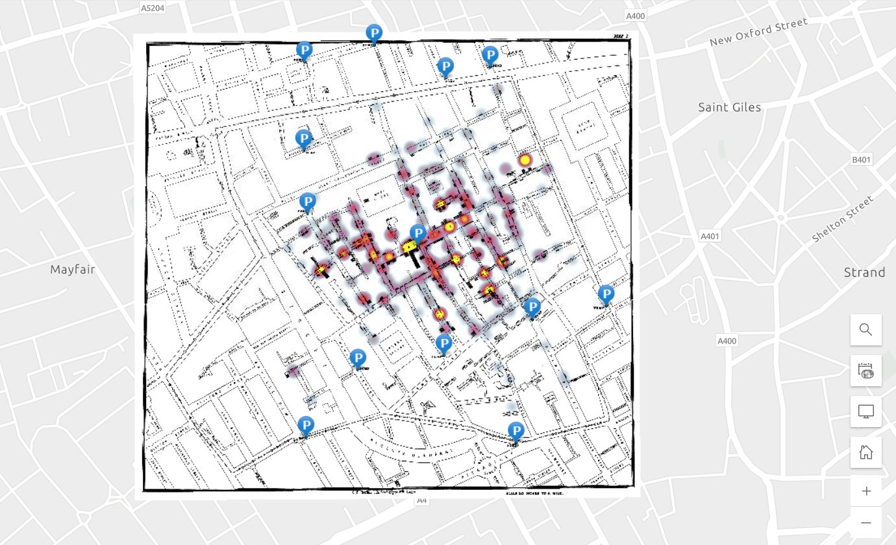

Scoping review · First author · Accepted poster, APHA 2026
Mental Health and Psychosocial Outcomes in MRKH Syndrome
35 studies mapped: psychosexual and emotional difficulties were the most widely reported outcomes, coping relied mostly on peers or concealment, and only 1 study came from Africa and none from South America.
View →

Global scoping review · First author · Accepted poster, APHA 2026
Psychosocial Outcomes and Coping in PMDD
44 studies from 1,943 records: depression is well documented, coping barely studied, and only 3 studies came from low- and lower-middle-income countries.
View →

Ecological analysis · Tableau · First author · VPHA 2026
Mental Health Disparities Across Virginia Counties
County maps and simple linear fits of 2025 County Health Rankings data: childhood poverty explained about half the county-level variation in mentally unhealthy days (R² = .51), while provider supply explained little of the variation in frequent mental distress (R² = .08).
View →

CDC PRAMS surveillance · First author · VPHA 2026
Perinatal Depression Among Virginia Women, 2016–2022
Depression during pregnancy rose from 9.4% to 16.9% (+79.8%), compared with a 44.8% rise (11.6% to 16.8%) across aggregate PRAMS sites.
View →
Secondary data analysis · 2026
Menstrual Cycle, Stress, and Sleep in Wearable Data
Two analyses of thousands of daily Fitbit records from the public mcPHASES
dataset, using linear mixed-effects models for repeated measures. Fertility
days (and, less robustly, luteal days) had slightly lower Fitbit
stress-management scores than follicular days, while daily physical activity
showed no significant association with next-night Fitbit sleep score.
Read the case study →
Group data project · 2026
Food Insecurity Across U.S. States, 2019–2023
Cleaned and analyzed 255 state-year records from Feeding America in SAS
Studio. Food insecurity dipped during pandemic relief and then climbed to an
average state rate of 14.2% by 2023, with the highest rates in the South and
persistent racial disparities.
Read the case study →
Data analysis · 2024
Cardiovascular Risk Factors in the Framingham Heart Study
I analyzed real, anonymized cohort data on 4,434 Framingham participants:
describing the sample, comparing men and women, modeling heart rate with
simple and multivariable regression, and testing which factors differ in
people with coronary heart disease. After adjustment, the diabetes–heart rate
association shrank and lost significance, reflecting its overlap with glucose.
Read the case study →

GIS · 2026
Mapping the 1854 Soho Cholera Outbreak
An ArcGIS Online heat map recreating John Snow's investigation, plus reviews of spatial clustering and dashboard design.
View →
Group project · Machine learning · Python & SQL
Segmenting and Predicting Campaign Responders
K-Means segmentation and four classifiers with cross-validation on 11,162 records, plus a deliberate decision to keep a leaking variable (call duration) out of the model.
View →
Code samples · SAS, R & Python
Statistical Programming
SAS assumption checks and regression, a tidyverse cleaning script in R, and a pandas data-quality diagnosis that separates values that fail to parse from values that parse but can't be true.
View →
Mini systematic review · 2025
Antibiotic Therapy for Buruli Ulcer in Ghana
I searched six databases following PRISMA guidelines, identified 126 records,
and synthesized nine sources (five Ghanaian clinical studies plus supporting
papers) on treating this neglected tropical disease. Oral
rifampicin–clarithromycin healed over 90% of mostly small lesions in the
included studies, while the need to monitor antimicrobial resistance calls for
continued surveillance.
Read the case study →
Research proposal · 2025
Stress, Anxiety, and Social Support Among Graduate Students: A Cross-Sectional Study Design
I designed a study to compare depression, anxiety, and stress between
international and domestic graduate students, and to test whether perceived
social support and campus services modify (moderate) the differences. The design covers
sampling and sample-size planning, validated instruments (DASS-21, MSPSS),
confounders, a regression and moderation analysis plan, missing-data handling,
and research ethics.
Read the case study →
Intervention proposal · 2025
Reducing Stress-Related Hypertension Among Police Officers in Ibadan, Nigeria
I designed a workplace intervention for police officers facing chronic
occupational stress. It uses a PRECEDE needs assessment, grounds its activities
in Social Cognitive Theory (self-efficacy) and the IMB model, and includes a logic model, a
stakeholder coalition, a pre/post evaluation plan, and policy recommendations.
Read the case study →
Research paper · Environmental Health
Raw Milk and Disease
A One Health review of zoonotic pathogens in unpasteurized milk, with
outbreak case studies from North America, Europe, and Africa and
culturally informed prevention strategies.
Group presentation · Environmental Health
Deforestation as a Public Health Issue
Co-presented with Chelsea Mazonde. Links forest loss in Nigeria and
Zimbabwe to respiratory illness, malaria, food insecurity, and
waterborne disease.
Article reviews · Health equity
Social Determinants & Health Inequities
Reviews of Marmot's Lancet paper on social determinants and of
Ezzati et al.'s "Reversal of Fortunes" on widening U.S. county mortality
gaps, plus an analysis of the documentary Unnatural Causes.
Journal article review · Infectious Disease
AI and Sputum Pooling for TB Diagnosis
A critique of a four-country modeling study that combined AI-read chest
X-rays with pooled sputum testing to cut costs and expand access to
GeneXpert testing, set against field evidence and real-world barriers.
Journal article review · Infectious Disease
Chlamydia Prevention and Screening
A critical appraisal of a 2024 cohort study on spontaneous clearance of
C. trachomatis, compared with current evidence on screening,
partner treatment, and prevention.
Disease fact sheets · Infectious Disease
Six Infectious Disease Fact Sheets
One-page summaries of Lassa fever, Marburg virus, hantavirus, yellow fever,
influenza, and tick-borne encephalitis, covering each disease's agent,
transmission, diagnosis, risk groups, treatment, and prevention.
Cybersecurity · CyberGirls 4.0 group project · 2024
Building a Secure Golden Image for the Cloud
With a five-person team, designed a hardened AWS machine image so every new
server starts from the same secure baseline: STIG hardening, CIS benchmarks,
OpenSCAP compliance checks, automated patching, logging, and vulnerability
scanning, demonstrated on AWS.
Leadership analysis · Public Health Administration
Local Government Leadership in Action
An analysis of a joint Lynchburg City Council and City Schools work session:
how leaders used data to target student support and prioritized facility
needs, and how the two bodies' cultures shaped collaboration.